24 Jan 2026
Perjumpaan Pertama AY, Adventurer & Pathfinder
Pertemuan pembukaan tahun 2026 untuk perancangan aktiviti dan pengukuhan rohani bersama ahli dan ibu bapa.
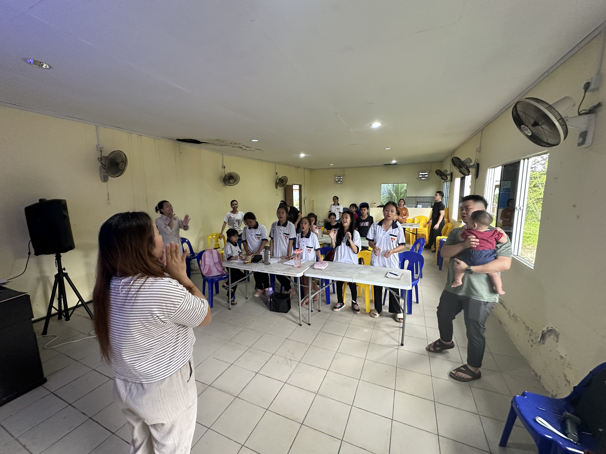
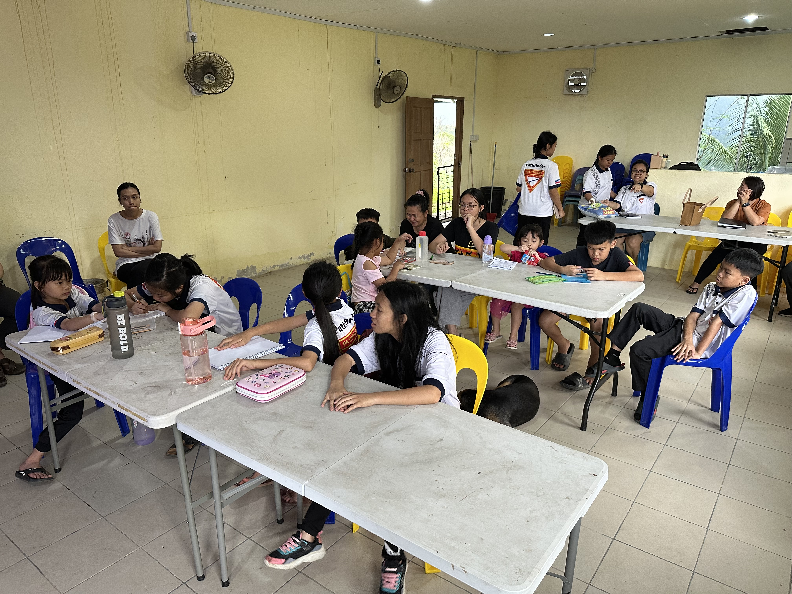
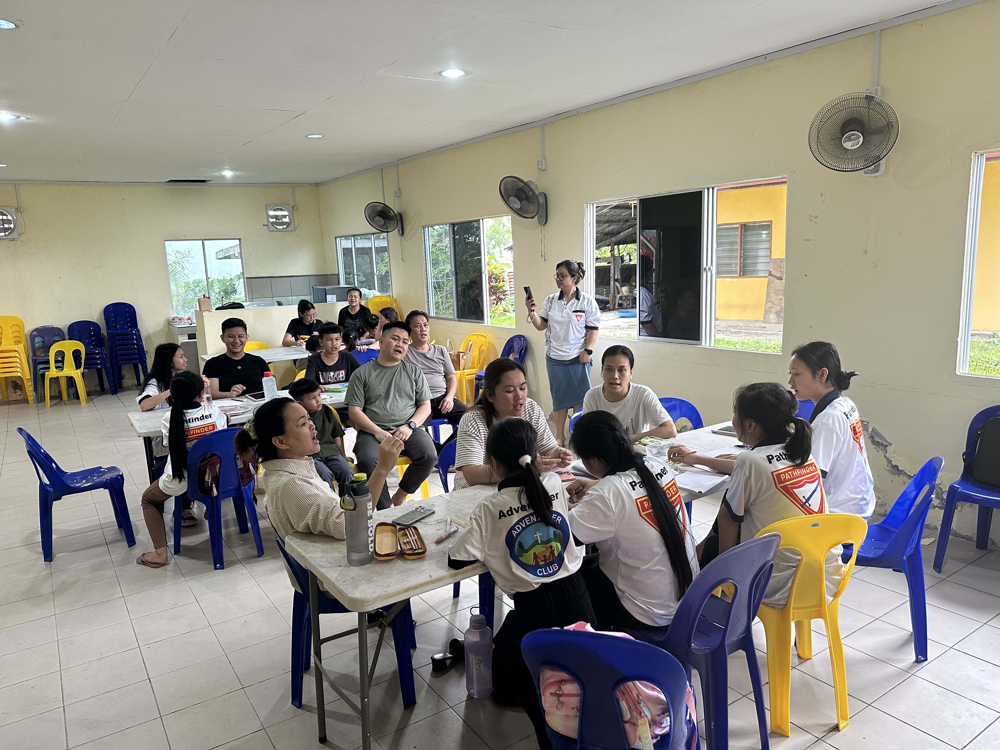
07 Feb 2026
Induction Night
Majlis rasmi malam induksi bagi menandakan komitmen pelayanan ahli-ahli belia untuk tahun 2026.


08 Feb 2026
Orientasi Kurikulum MIT
Sesi orientasi khusus bagi calon Master Guide in Training.
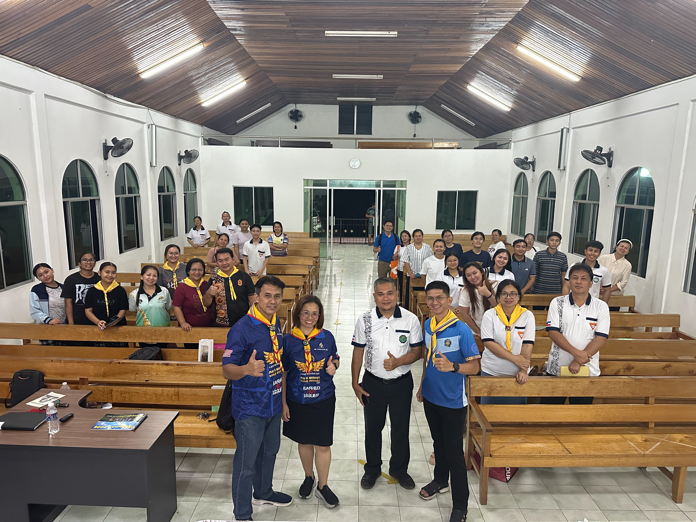
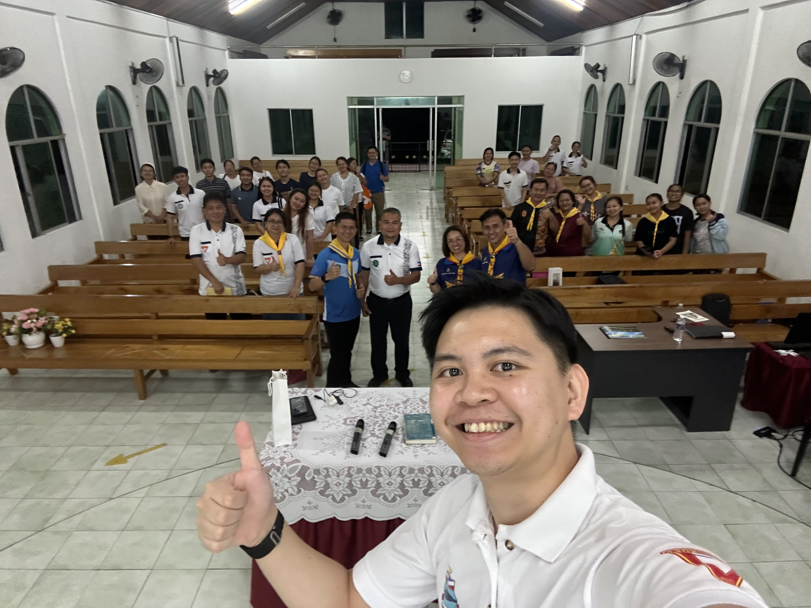
15 Feb 2026
Meeting Jabatan Belia Daerah Kapa
21 Feb 2026
Aktiviti Karakter Alkitab
Mengenal identiti rohani melalui lakonan dan teka mesej tanpa suara.
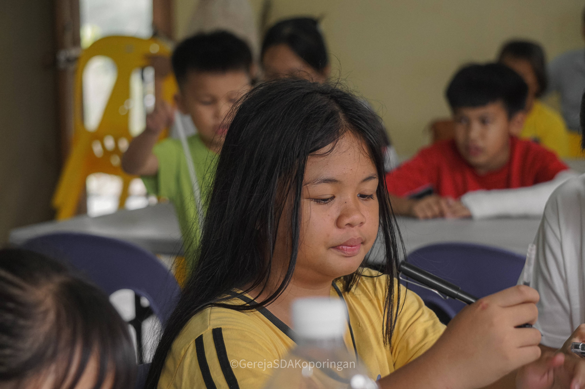
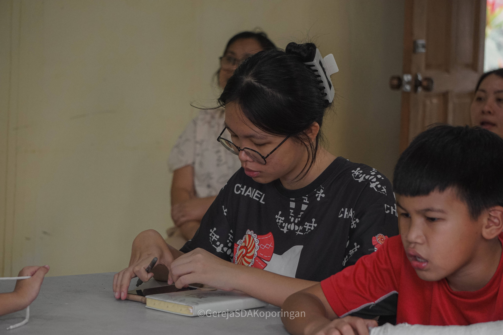
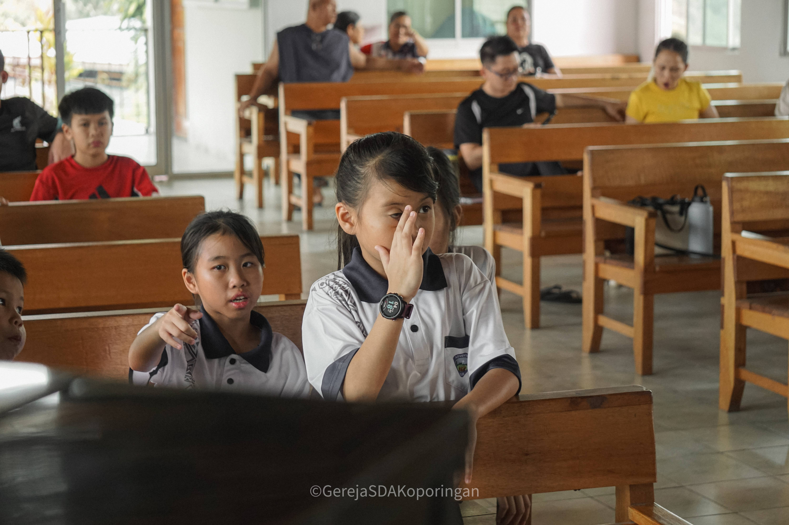
22 Feb 2026
Progressive Class AD & PF
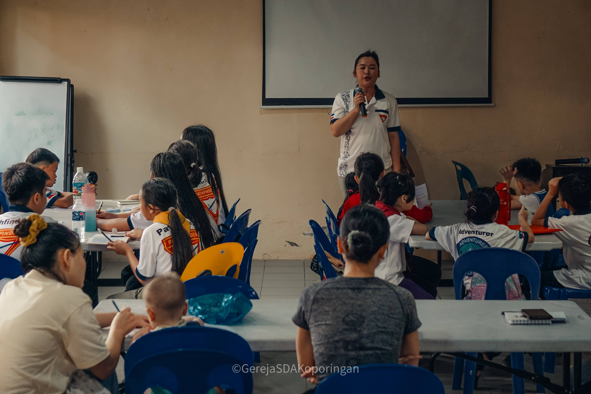
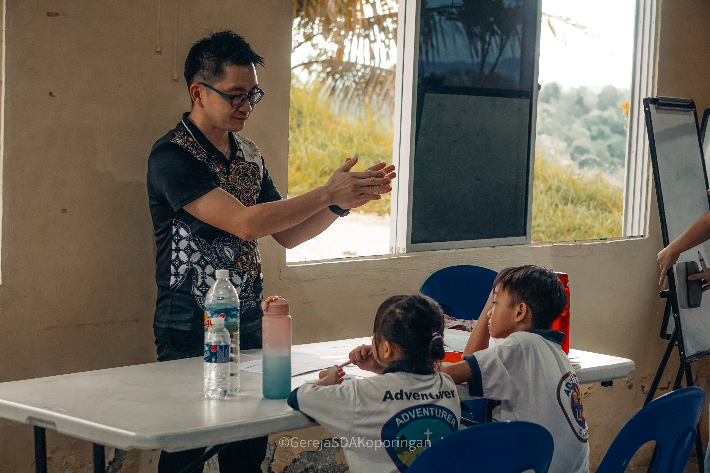
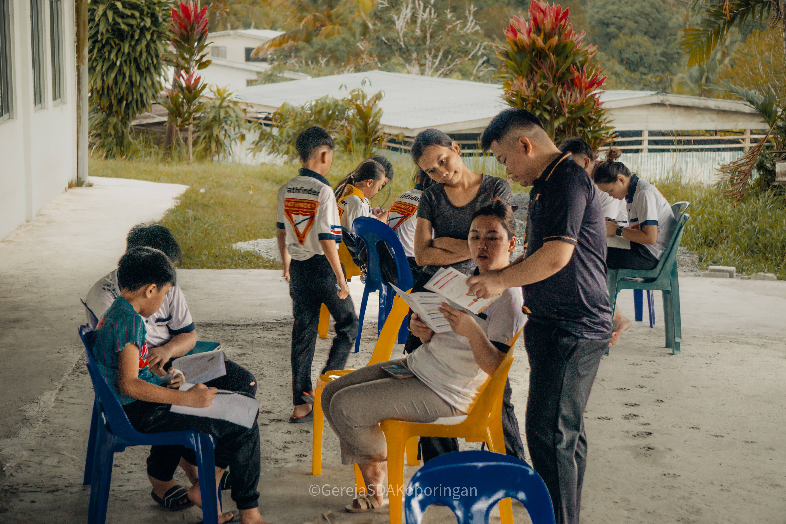
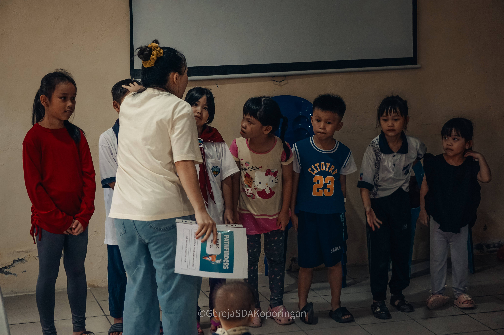
14 Mac 2026
Global Children & Youth Day
Program ziarah doa dan kasih serta aktiviti kraf kreativiti di Kg. Koporingan.
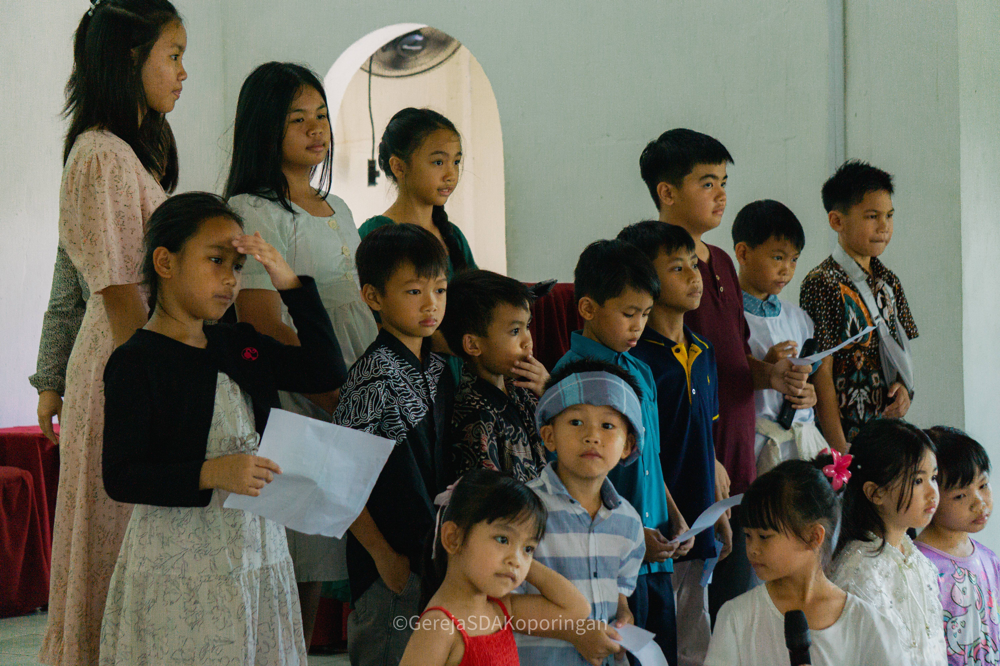
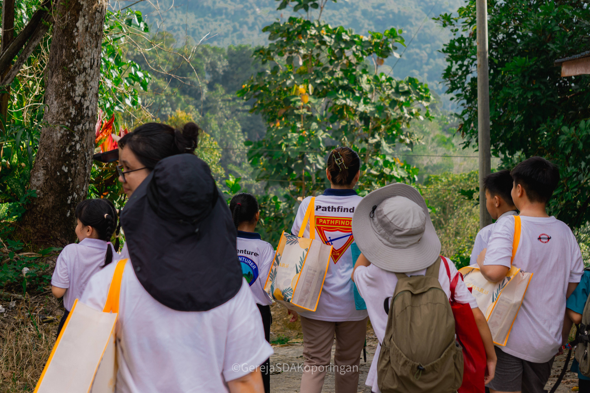
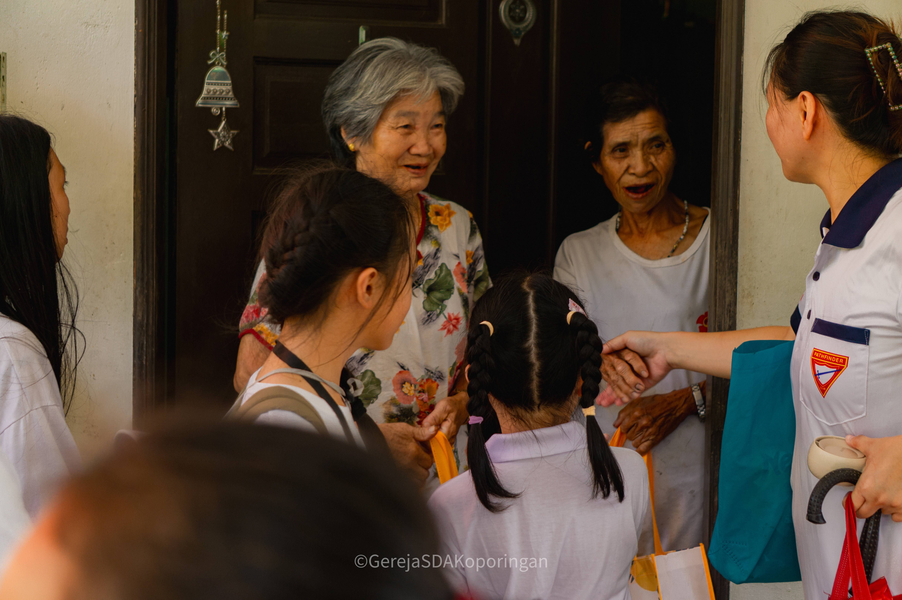